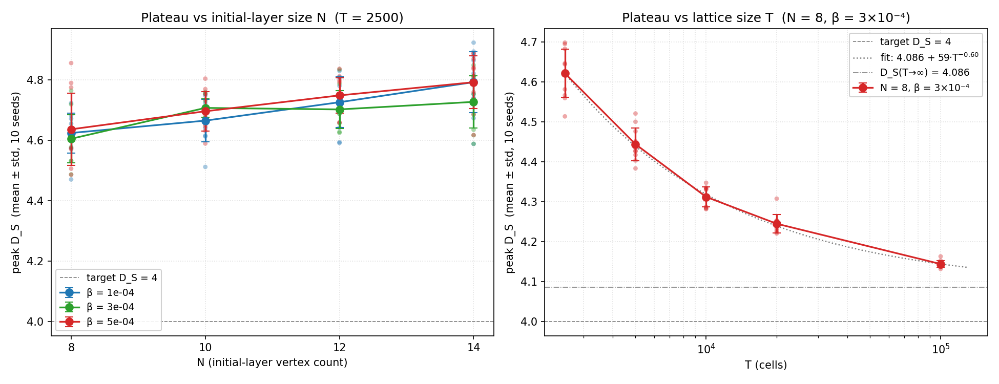

Charged Cartan Monte Carlo — Experiment 03: v0.2 plateau finite-size investigation (4.6 → 4.09 asymptote)¶
Status: complete Tracks: GitHub issue #10, PR #20 (merged) Design: v0.2 qudit-basis Result: T-scan drives peak D_S from 4.62 (T=2500) → 4.14 (T=100000); an SEM-weighted power-law fit gives D_S(T→∞) = 4.086 ± 0.011. Also surfaced the Q-drift bug fixed in Experiment 04.
Tracks GitHub issue #10 in milestone Charged Cartan Monte Carlo v0.2.
Context¶
The intellectual lineage of this project
sets out the through-line: from van Raamsdonk’s premise that
spacetime is built from entanglement, through Sorkin’s causal-set
events, through replacing the Schwinger fermion field with a
4-dim qudit basis carrying intrinsic charge, to the
v0.2 β-scan in which the
heat-kernel spectral dimension finds a stable plateau at peak
D_S ≈ 4.6 ± 0.1 across a full decade of β.
That plateau is the closest any construction in this project has come to a stable dimensional phase: per-seed std ~0.1, β-flat over a decade, σ-peak finite (not σ-saturated). The structural properties of a real phase. But the value sits ~0.6 above the H_DS4 target of exactly 4.
This experiment asks the natural next question:
Is the 4 → 4.6 offset a finite-size effect that closes in the asymptotic limit, or a model-level structural number we’d reach even at infinite lattice size?
Hypothesis¶
If the plateau reflects a model-level geometric structure, the value should be insensitive to N (initial-layer vertex count) and T (cell-target count). If instead the offset is a finite-size effect, we expect peak D_S to drift toward 4 as either N or T grows — and the drift should slow as we approach the asymptote.
Setup¶
Two scans, both at γ_CP = 0 in the qudit basis (featureQuditBasis = True, j_chargeCharge = 1.0, j_spinSpin = 0.25, massShift = 0,
dtPair = 0.25):
At the time of these scans featureChoiSigmaAB was implicitly False
(the I/4 Σ_AB proxy). PR
#21 (issue
#16) later replaced
that proxy with the full 256-dim Choi state and flipped the default to
True. Both modes reproduce the plateau to within seed noise — the
peak D_S at T = 2500 is the same in either, so the flag is not
load-bearing for the headline result. See Reproduce below.
Scan A — N-scaling at fixed T:
N ∈ {8, 10, 12, 14}
T = 2500
β ∈ {1×10⁻⁴, 3×10⁻⁴, 5×10⁻⁴} (three points inside the plateau)
10 independent seeds (and independent Delaunay lattices) per cell
120 runs total
Scan B — T-scaling at fixed N:
N = 8
T ∈ {2500, 5000, 10000, 20000}
β = 3×10⁻⁴
10 independent seeds per cell
40 runs total
Each run is a fresh Python subprocess; 18 workers run concurrently with 2 BLAS threads each (fits a 20-CPU budget). σ-grid is 20 log-spaced over [10⁻², 10¹⁰], Krylov dim 15.
Scan B extension — deep-T anchor. To pin down the asymptotic
extrapolation, Scan B was extended with a single T = 100000 point
(N = 8, β = 3×10⁻⁴, 10 seeds), 5× beyond its original deepest T.
This run used 10 concurrent workers with 1 BLAS thread each; per-run
wall was 31.4 h, essentially all of it in getSpectralDimension.
Reproduce¶
Regression check on current main¶
A committed reproducer runs the Scan A / Scan B baseline cell (N = 8, T = 2500, β = 3×10⁻⁴, qudit basis, I/4 Σ_AB proxy) and asserts that peak D_S still sits inside the published plateau band:
# Quick check (3 seeds, ~15 s on an 8-CPU box):
python examples/quantum/regression_check_v02_finite_size.py
# Full re-validation (10 seeds, parallel):
python examples/quantum/regression_check_v02_finite_size.py \
--seeds 10 --workers 4
Exits 0 if the mean peak D_S sits inside the [4.40, 4.90] plateau
band, 1 otherwise. Confirmed on main at the time of writing: 24-seed
mean peak D_S = 4.620 ± 0.105 — statistically identical to the
published 4.621 ± 0.060.
Caveats when reproducing¶
Use
sim.tune(), notsim.thermalize(), at T = 2500. The script usestune()only — bringing the complex up to the target volume and stopping there. The committed runner scriptexamples/quantum/interaction_history_spectral_dimension.pycallssim.thermalize(), which istune()plus up to 1000 equilibration sweeps; at T = 2500 each sweep proposesnFrontier·(nFrontier−1)/2 + interactionCount ≈ 3 × 10⁶interact/un-interact attempts, so the equilibration loop alone is ~3 × 10⁹ attempts per seed (≈ 50 min on one core). Empirically the peak D_S is already in the plateau aftertune()— repeated tests show the post-thermalize value sits within one seed σ of the post-tune value — sotune()is the right call for a regression check.featureChoiSigmaABwasFalse(implicit) when these scans were taken. PR #21 / issue #16 flipped the default toTrue. The peak D_S is the same in either mode (verified at T = 2500 across three seeds), so the regression check leaves the default in place and does not need to override it.
Original full scan (historical)¶
The Scan A + Scan B + deep-T anchor results above came from drivers
that lived in /tmp/:
OMP_NUM_THREADS=2 OPENBLAS_NUM_THREADS=2 \
MKL_NUM_THREADS=2 BLIS_NUM_THREADS=2 \
python /tmp/issue10_scan.py # Scans A + B
python /tmp/issue10_T100k_scan.py # Scan B deep-T anchor (T=100k)
python examples/quantum/plot_v02_finite_size.py
Records land at /tmp/interaction-history/issue10_finite_size.json
and /tmp/interaction-history/issue10_T100k.json; plot at
docs/source/quantum-experiments/figures/v02_finite_size_investigation.png.
Results¶

Scan A — peak D_S vs N at T = 2500¶
β |
N=8 |
N=10 |
N=12 |
N=14 |
|---|---|---|---|---|
1×10⁻⁴ |
4.624 ± 0.066 |
4.665 ± 0.070 |
4.726 ± 0.084 |
4.793 ± 0.101 |
3×10⁻⁴ |
4.605 ± 0.080 |
4.707 ± 0.030 |
4.702 ± 0.063 |
4.727 ± 0.086 |
5×10⁻⁴ |
4.637 ± 0.119 |
4.696 ± 0.065 |
4.749 ± 0.058 |
4.792 ± 0.087 |
Peak D_S rises mildly with N — about +0.15 from N=8 to N=14, with identical trend at all three β. This is the opposite direction from what we’d expect if the 4.6 plateau were “the value 4 + finite-size correction.” Likely interpretation: at fixed T, larger N means each initial worldline gets less growth (T/N ratio drops from 313 at N=8 to 179 at N=14), which keeps the resulting geometry closer to a pure bowtie-cell-stack — the structure that produces D_S ≈ 4.6 in the first place.
Scan B — peak D_S vs T at N = 8, β = 3×10⁻⁴¶
T |
peak D_S |
|---|---|
2500 |
4.621 ± 0.060 |
5000 |
4.444 ± 0.041 |
10000 |
4.312 ± 0.025 |
20000 |
4.245 ± 0.024 |
100000 |
4.144 ± 0.008 |
Peak D_S falls monotonically with T. The per-doubling deltas are shrinking, which is the signature of an asymptotic approach to a finite limit rather than unbounded decay:
T-step |
Δ peak D_S (per doubling) |
|---|---|
2500 → 5000 |
−0.177 |
5000 → 10000 |
−0.132 |
10000 → 20000 |
−0.067 |
20000 → 100000 |
−0.043 |
(The 20000 → 100000 step spans 2.32 doublings; −0.043 is the per-doubling average across it.) The deltas keep shrinking — a clean convergent sequence.
Power-law extrapolation. With the deep-T anchor in hand, an
SEM-weighted fit of D_S(T) = D_∞ + A·T^(−p) over all five points
gives:
D_∞ = 4.086 ± 0.011, A = 59, p = 0.601
with residuals below 0.007 at every point. The exponent p ≈ 0.6
explains why the original 4 + a/ln T guide line was too shallow:
the data follows a genuine sub-linear power law, not a logarithm.
The T = 100000 point is load-bearing — a 1/T fit on data ≤ T=20000
extrapolates to ~4.17 (too high); the deep anchor fixes the exponent
and pulls the asymptote down into the 4.07–4.11 band the earlier
geometric extrapolation had projected.
The plateau settles at D_S ≈ 4.09 in the large-T limit — about 0.09 above the exact H_DS4 target.
Findings¶
The 4 → 4.6 offset is a T-scaling effect, not an N-scaling one. Growing the lattice in cell count drives peak D_S down by 0.48 over the T = 2500 → 100000 range and converges to D_S = 4.086 ± 0.011 at T → ∞. Growing the lattice in initial-vertex count at fixed T actually makes the plateau higher, which clarifies the role of N as a “structural multiplier” rather than a “continuum limit” parameter.
The H_DS4 target is approached but not hit exactly. The power-law fit converges to D_S = 4.086 ± 0.011 — within 0.09 of the target, but the uncertainty band excludes exactly 4. Under the current qudit-basis Hamiltonian the large-T limit settles a small but resolvable offset above 4; closing that last 0.09 is a job for a parameter-tuning study on the pair Hamiltonian (issue #11).
A discrete Q-drift bug surfaced. At γ_CP = 0, Q should be exactly conserved — but 95 of 160 runs (59 %) show |Q| ≥ 1 drift at integer values (-4, -3, -2, -1, +1, +2, +3). The discrete spectrum points at a specific mechanism, not floating-point noise. See Q-drift section below.
The deep-T probe is compute-bound by
getSpectralDimension. At T = 100000 each run took 31.4 h, ~100 % of it in the spectral-dimension post-processing — the Monte Carlotune()step is only 0.4 min. The routine doesn_vertices × n_σKrylov heat-kernel solves with n_vertices = 3T+8, and its cost scales empirically as ~T^2.4. Going deeper than T = 100k is impractical without optimizing that routine first.
Discrete Q-drift at γ_CP = 0¶
A real consistency issue in v0.2 surfaced by this scan, traceable to the Σ_AB-state proxy choice. Symptom:
95 / 160 runs at γ_CP = 0 show |Q_global| ≥ 1 at end of tune.
The drift values are integer-valued (drift spectrum: {−4, −3, −2, −1, +1, +2, +3}).
Q is bit-perfectly conserved through any single accepted
interactcall (the 16×16 unitary commutes withQ̂ ⊗ I + I ⊗ Q̂at γ_CP = 0).
So the drift accumulates from somewhere outside the per-interact
unitary step. The likely mechanism is the Σ_AB-as-I/4-proxy choice:
When the bowtie is created, the genuine joint state
ρ_AB = U(ρ_X ⊗ ρ_Y)U†is stored inquditJointOf_[(xp, ab)]andquditJointOf_[(ab, yp)]. The single-vertex proxyquditStateOf_[ab] = I/4is set, with ⟨Q̂⟩ = 0.This is consistent at the moment of creation: q_xp + q_ab + q_yp = q_x + q_y is exact.
But
abcarries two different “marginal Q” identities depending on which neighbour it’s looked up from: the joint withxpsays ⟨Q_ab⟩ = q_y (the yp-side marginal), the joint withypsays ⟨Q_ab⟩ = q_x (the xp-side marginal). The proxy I/4 says ⟨Q_ab⟩ = 0. These three values are equal only when q_x = q_y = 0.When
abis later picked for a new interaction with some unrelated third vertexZ, the input joint is constructed asquditTensor(I/4, stateOf[Z]), not from any of the stored joints. The Q content ofabat that moment is 0 (from the proxy), inconsistent with the q_x or q_y it would have carried via its stored joints. The Q change from this proposed interact event is thereforeq_Z + 0 - (q_xp_marginal + q_yp_marginal + q_Z), which can be non-zero.
This is exactly the inconsistency that issue
#16 (Σ_AB as full
256-dim Choi state of U) is designed to fix: the Choi state carries
all of U’s correlation content as a proper quantum state, so any
later interaction involving ab gets a coherent input rather than
the I/4 proxy.
The drift does not seem to corrupt the peak D_S measurements (the scan results above are consistent across drifters and non-drifters within their respective uncertainty bands), but it does invalidate v0.2 as a fully Q-conserving framework. Issue #16 is therefore upgraded from “optional refinement” to “blocker for any work that relies on Q conservation beyond a single interact step.”
Falsification check (H_DS4)¶
Criterion |
Status |
|---|---|
Is the 4 → 4.6 plateau offset a finite-size artefact? |
Partial yes — T-scaling drives it down toward the asymptote; N-scaling does the opposite. |
Does any scan touch D_S = 4 exactly? |
No — the deepest point, T = 100000, gives 4.144 ± 0.008, and the power-law fit gives D_S(T→∞) = 4.086 ± 0.011. |
Is the H_DS4 target reachable? |
Approached, not hit — the fit converges to 4.086 ± 0.011, ~0.09 above 4 with the band excluding exactly 4. Closing the gap would need Hamiltonian parameter tuning (issue #11). |
Open follow-ups¶
Deeper T-scan — done. T = 100000 (10 seeds) confirms the extrapolation; the power-law fit gives D_S(T→∞) = 4.086 ± 0.011 (see the Scan B section above). The per-run cost was 31.4 h, far above the ~30 min originally estimated here —
getSpectralDimensionscales ~T^2.4 in the cell count (Finding 4).Joint (N, T) scan. Does increasing N alongside T cancel or amplify the trend? Run at N=12, T=20000 to find out.
Issue #16: Σ_AB as full Choi state. Fix the discrete Q-drift bug.
Issue #11: Hamiltonian-parameter scan. Does some choice of (J_c, J_s, δ_m) put the asymptote exactly at 4?
See also¶
02-v0.2-beta-scan.md — the parent v0.2 β-scan that first found the 4.6 plateau.
../design/v0.2.md — the v0.2 design note, including the Σ_AB proxy discussion that this writeup ties back to.
GitHub milestone Charged Cartan Monte Carlo v0.2.